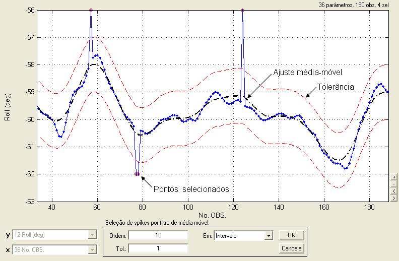

| Menu Dados |
|
Selecionar
Spikes
Essa função
permite selecionar os pontos ruidosos em um
parâmetro de tempo através de uma análise de tolerância a um ajuste de
média
móvel.
- Selecione em “y” o
parâmetro que deseja analisar.
- Clique no menu
“Dados ► Selecionar ... ► Spikes”.
A Caixa de
Diálogo solicitará que o usuário indique os
parâmetros para a operação, e o gráfico apresentará o resultado
preliminar da
seleção:

● No campo
“Ordem”, indique a ordem do ajuste de média
móvel (ver descrição do método abaixo);
● No campo “Tol.”, indique a
tolerância desejada para identificação dos spikes com relação ao ajuste;
● No campo
“Em”, indique em que parte do parâmetro
deseja realizar a análise. As opções são:
|
Opção |
Descrição |
|
Tudo |
Em toda a
extensão do parâmetro. |
|
Intervalo |
Apenas no
intervalo selecionado (intervalo visível no gráfico). |
A cada
alteração dos parâmetros, o resultado preliminar e a
quantidade de pontos selecionados (apresentada no canto superior
direito da
janela) serão atualizados:

Lógica da
Operação
O método é
baseado na análise de tolerância dos pontos a um
ajuste de média móvel do parâmetro.
- O ajuste de média
móvel amortece os spikes,
gerando uma curva suavizada mais próxima aos valores reais.
- Os spikes
se
sobressaem com relação ao ajuste, ficando fora da tolerância.
- Os pontos fora da
tolerância são selecionados.
| Nota: Spikes com valores
muito grandes tendem a deslocar o ajuste para longe dos valores reais.
Recomenda-se que esses spikes
sejam eliminados previamente. |
| Nota: A ordem do
ajuste e a tolerância são parâmetros fundamentais para o funcionamento
do método. Alterne os valores conforme necessário até obter o melhor
resultado. |
| |
Selecionar
pontos inválidos de tempo |
Desselecionar |
|